Chapter 3 Data Visualisation
Data visualisation plays a crucial role in both ex- and post- data analysis. Prior to data analysis, it helps organise complex and unstructured data into statistically meaningful graphical representations, enabling researchers to explore patterns, identify trends, and detect potential relationships within the data. After the analysis, visualisation serves as an effective medium for communicating results, helping to convey the key findings and maintain a coherent narrative throughout the analytical process. This chapter introduces data visualisation techniques in the R programming language, with particular emphasis on the use of the ggplot2 package. Various types of charts and their corresponding coding approaches are presented, along with detailed explanations of graphical customisation options that allow figures to be refined and tailored for clearer and more informative presentation.
The ggplot2 package is one of the most widely used visualisation tools in R. The term “gg” refers to the Grammar of Graphics, indicating that plots generated with this package are constructed according to a systematic set of rules, analogous to the grammatical structure of a language. The ggplot2 package provides a wide range of functions for producing different types of charts, while also offering extensive flexibility to adjust graphical elements and styles, thereby improving the clarity and interpretability of the data.
In ggplot2, the plotting framework is primarily composed of four fundamental components: data and aesthetic mappings (axes and variables), geometric objects (chart types), scale settings, and theme settings. The overall structure of the plotting framework is illustrated in Figure 3.1.
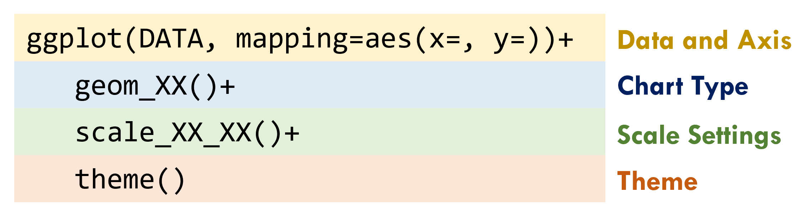
Figure 3.1: Structure of plot using ggplot2
Taking Figure 3.2 as an example, the graphical elements controlled by each component are summarised as follows:
- Data and axes: The input dataset is the iris dataset, with sepal length (
Sepal.Length) specified as the horizontal axis and sepal width (Sepal.Width) specified as the vertical axis.
- Geometric object: A scatter plot is used.
- Scale settings: Petal width (
Petal.Width) is mapped to a colour gradient, and petal length (Petal.Length) is mapped to the size of the points.
- Theme settings: The colour and size of the axis text are customised, and the legend text size, weight, and background colour are specified.
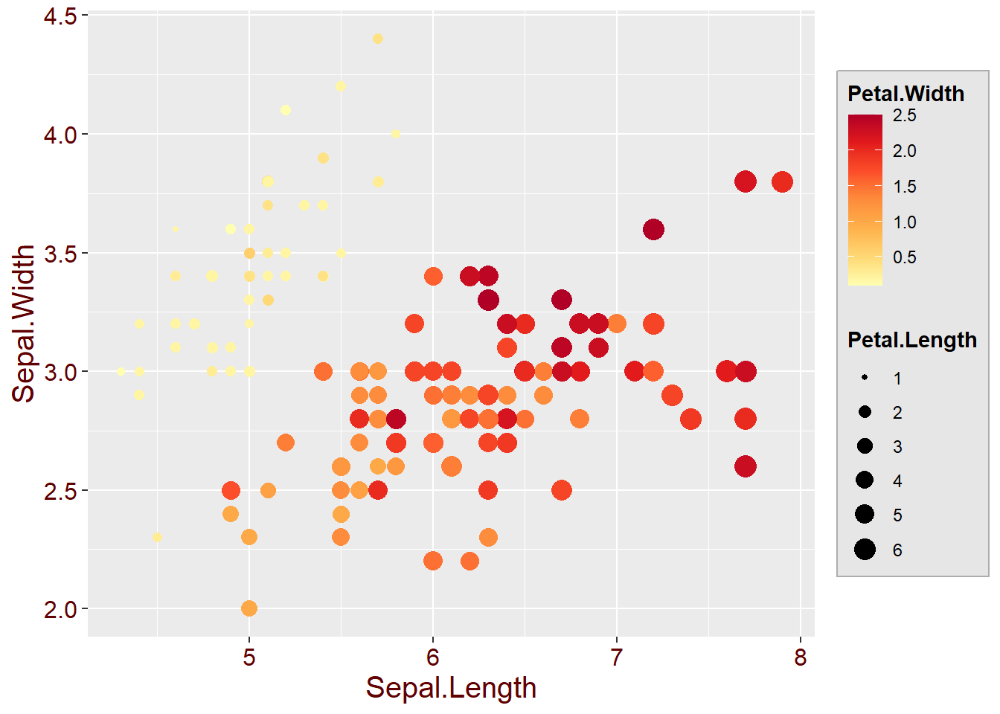
Figure 3.2: Example of plotting using ggplot2 package
This chapter introduces commonly used chart types and systematically summarises the core plotting concepts of the ggplot2 package. However, it is not possible to cover all chart types or the full range of graphical customisation options. Readers are therefore encouraged to search for relevant resources online using appropriate keywords. By examining and adapting example code from others, one can effectively learn additional plotting techniques and improve their visualisation skills.
In addition, the following resources provide rich galleries of R visualisations, many of which include complete code examples that can serve as useful references for learning and implementation:
3.1 Types of Chart
Summary of Chart Types
This section summarises commonly used chart types (as shown in Table 3.1) and introduces the code executed to create each type of chart. Through different forms of data visualisation, various characteristics and patterns within the data can be effectively presented.
| Chart Type | Features/Applications | Packages | Functions | Illustration |
|---|---|---|---|---|
| Scatter Plot |
|
ggplot2
|
geom_point()
|
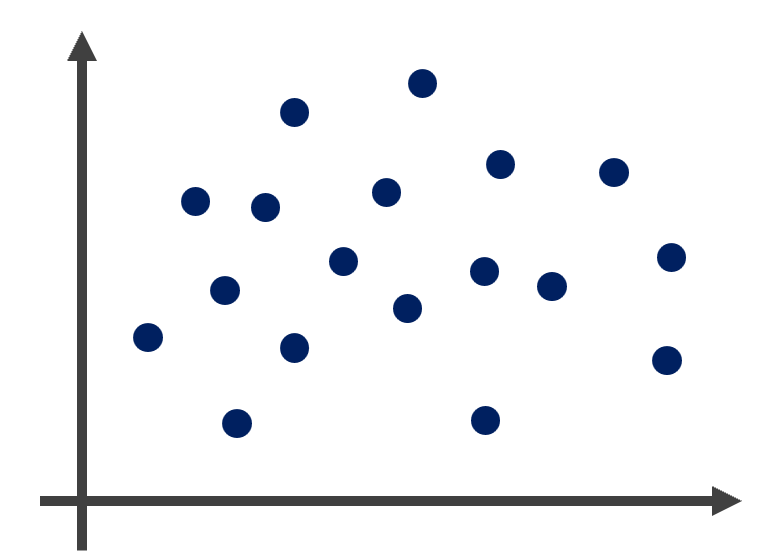 |
| Line Chart |
|
ggplot2
|
geom_line()
|
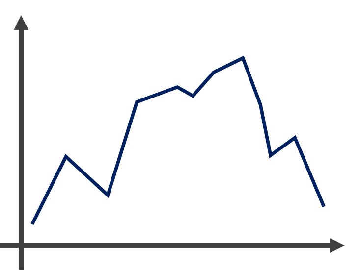 |
| Bar Chart |
|
ggplot2
|
geom_bar()
|
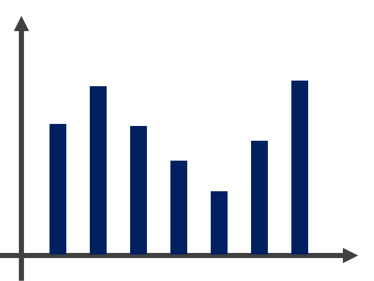 |
| Histogram |
|
ggplot2
|
geom_histogram()
|
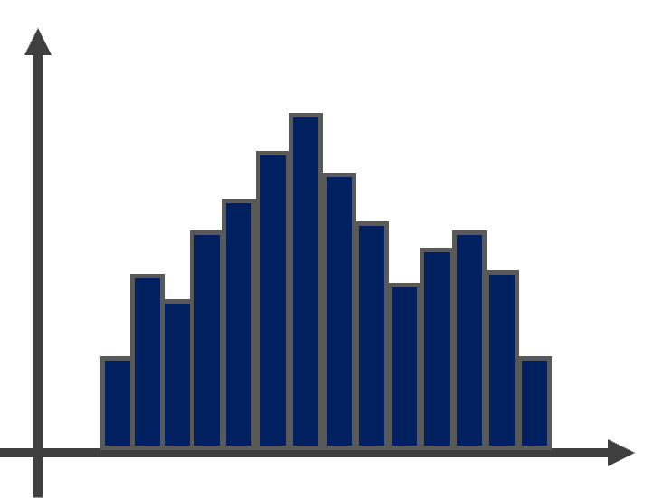 |
| Density Plot |
|
ggplot2
|
geom_density()
|
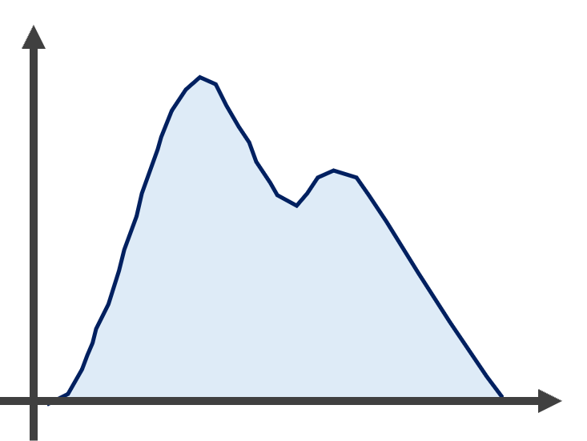 |
| Pie Chart |
|
ggplot2
|
geom_bar() + coord_polar()
|
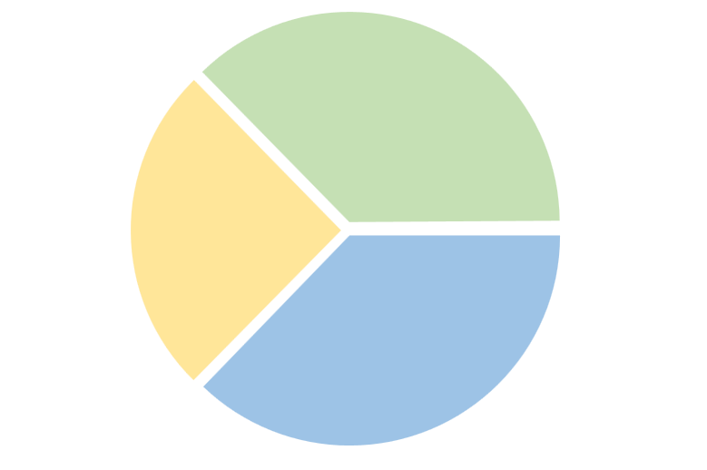 |
| Lollipop Plot |
|
ggplot2
|
geom_segment()
|
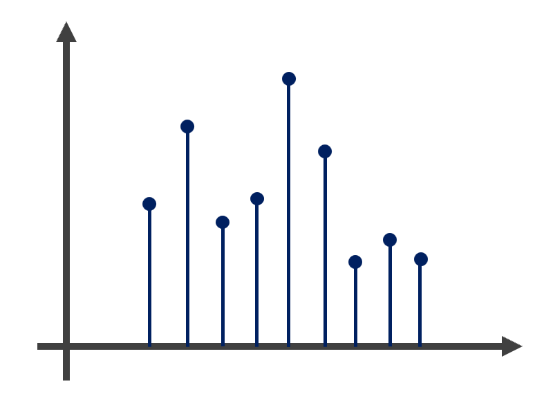 |
| Box Plot |
|
ggplot2
|
geom_boxplot()
|
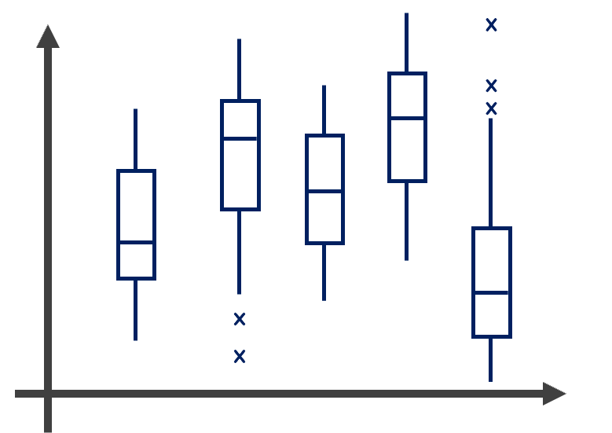 |
| Violin Plot |
|
ggplot2
|
geom_violin()
|
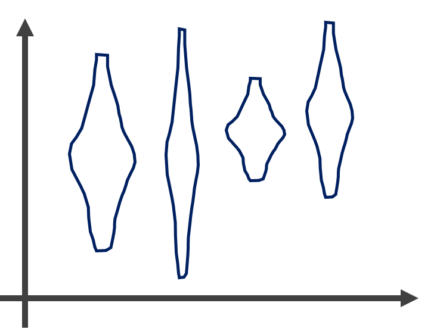 |
| Bubble Plot |
|
ggplot2
|
geom_point()
|
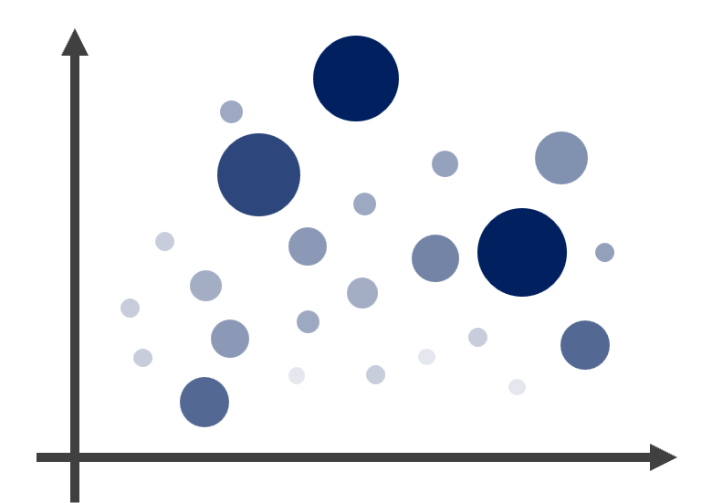 |
| Ridgeline Plot |
|
ggridges
|
geom_density_ridges()
|
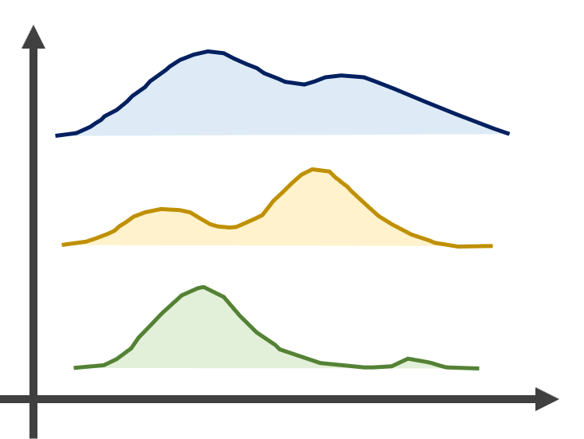 |
| Heat Plot |
|
ggplot2stats
|
geom_tile()
|
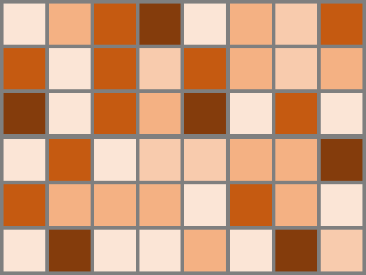 |
| Treemap |
|
treemapifytreemap
|
geom_treemap()
|
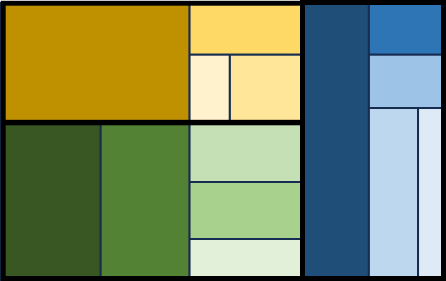 |
| Sankey Diagram |
|
ggalluvialggsankey
|
geom_density_sankes()
|
|
| Radar Chart |
|
ggradarfmsb
|
ggradar()
|
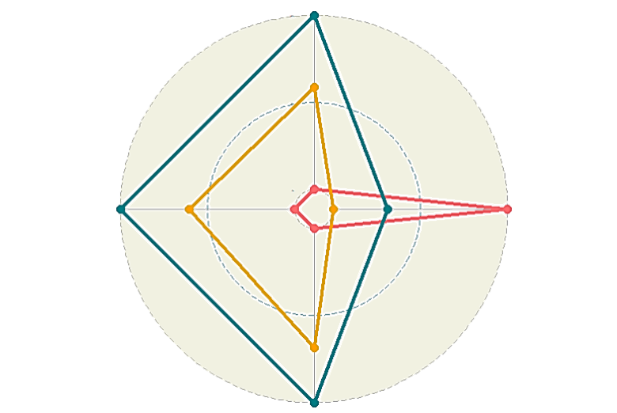 |
| Ternary Plot |
|
ggternTernary
|
geom_ternary()
|
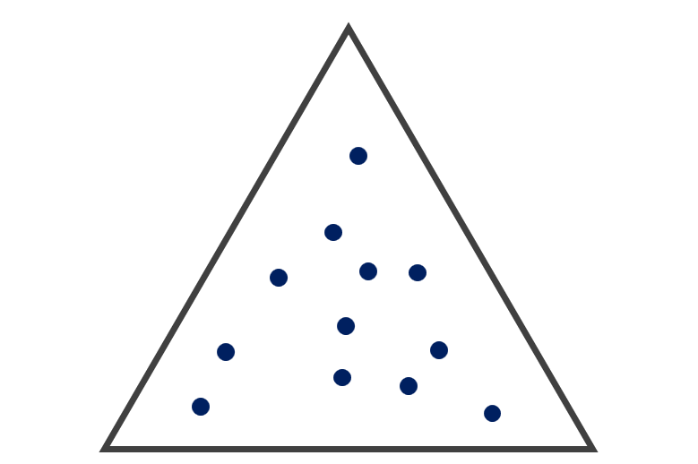 |
| Note: | ||||
The bold text in the Package column indicates packages that can be integrated with the ggplot2 package.
|
Initialisation
As mentioned earlier, ggplot2 follows the grammar of graphics. Its most fundamental elements are data and axes, which serve as the “canvas” before drawing various types of charts. This canvas can be generated using the ggplot() function, whose basic structure is shown below.
Using the iris dataset as an example, we create a canvas with Sepal.Length as the x-axis and Sepal.Width as the y-axis. The code for setting up this basic canvas is as follows.
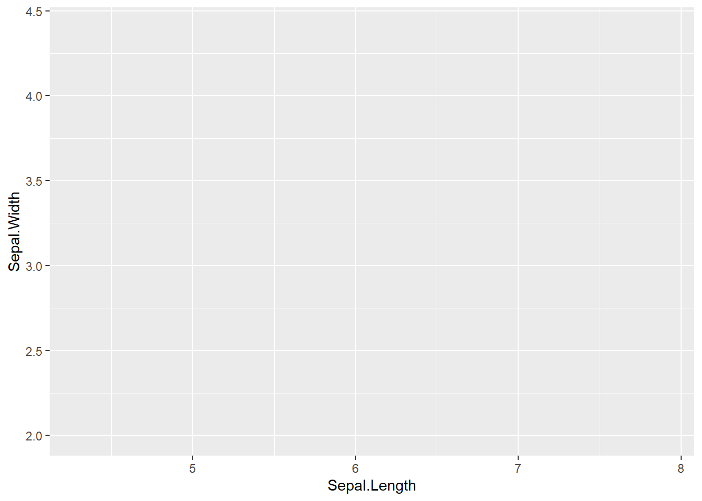
⌾ aes(): Set the aesthetics
aes stands for “aesthetics”, and it is used to define elements in a plot that vary according to the data. For example, when drawing points or lines in a chart, their positions must depend on the data coordinates, so the arguments x= and y= must be placed inside the aes() function.
Similarly, if different data points or lines should be assigned to different colours (color=), sizes (size=), line widths (linewidth=), or line types (linetype=), these properties must be controlled by the data and therefore should also be specified within this function.
In summary, arguments that change with the data must be placed inside aes(), while arguments that remain constant across the plot should be placed outside aes().
⌾ Data and axes
Please note that specifying the data and axes does not necessarily have to be done within the ggplot() function; it can also be placed inside the chart-type function geom_XX(), and the result will be exactly the same. The syntax below yield identical outputs.
# axes set in ggplot() function
ggplot(DATA, aes(x=, y=))+
geom_XX()
# axes set in geom_XX() function
ggplot()+
geom_XX(data=DATA, aes(x=, y=))If different chart types applies the same data and axes when plotting multiple layers, axes can be specified directly within the ggplot() function. However, if these layers use different data or axes, it is recommended to specify them separately within each geom_XX() function when specifying the chart type.
Symbol Settings
In R, different types of charts may require settings such as shape (shape=), line type (linetype=), and colour (color=). The codes for these settings are briefly introduced below.
Figure 3.3 lists 26 default codes for point shapes in R, and it can be specified directly by assigning the corresponding numeric code. In addition, custom symbols can also be used For example, setting "X" displays the symbol “X” as the point shape.
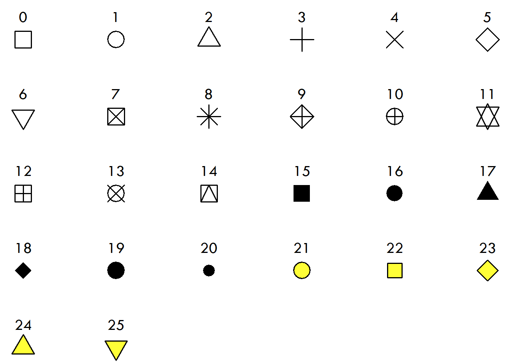
Figure 3.3: Code of point shapes in R
There are 7 default codes for line types in R, as listed in Figure 3.4.
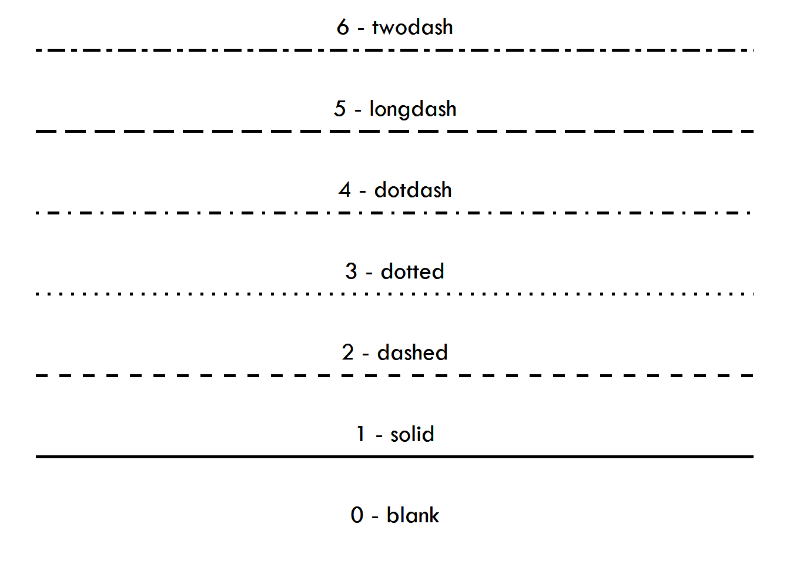
Figure 3.4: Code of line shapes in R
Colours can be specified either by using predefined colour names, as listed in Figure 3.5, or by directly providing hexadecimal colour codes. For reference, see the colour code table.
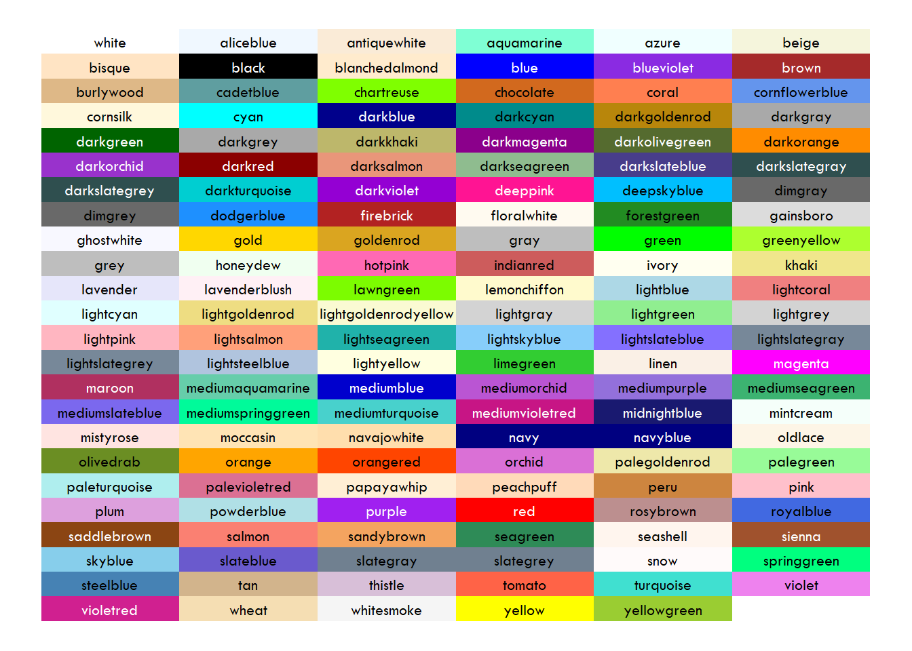
Figure 3.5: Predefined colour name
With the above basic understanding of chart settings, we will now use a variety of datasets and examples to demonstrate the functions of different chart types and their corresponding code implementations.
3.1.1 Scatter Plot
A scatter plot is a graphical method for illustrating the relationship between two continuous variables. The horizontal (x) and vertical (y) axes represent different continuous variables, while individual points depict their paired values within a two-dimensional space. This visualisation can be created using the geom_point() function, with the general function structure shown below.
The settings of the above arguments are summarised in Table 3.2.
| Arguments | Usage | Note |
|---|---|---|
color=
|
Set the Colour of the points | Refer to colour setttings |
shape=
|
Set the shape of the points | Refer to shape settings |
size=
|
Set the size of the points | Values |
stroke=
|
Set the thickness of the point outline | Values |
fill=
|
Set the fill Colour of the points | Refer to colour settings. Note that only the hollow shapes（e.g., 21~25 in Shape Settings are effective. |
alpha=
|
Set the transparency of the points | Numeric value between 0 (fully transparent) and 1 (fully opaque) |
⌾ Basic scatter plot
Using the iris dataset as an example, plot a scatter plot with Sepal.Length on the x-axis and Sepal.Width on the y-axis. The code is written as follows.

⌾ Revise the styles
To customise the appearance of the points, you can adjust them using the arguments listed in Table 3.2.
ggplot(iris, aes(x=Sepal.Length, Sepal.Width))+
geom_point(color="red", shape=23, size=3, stroke=1, fill="#AE57A4", alpha=0.5)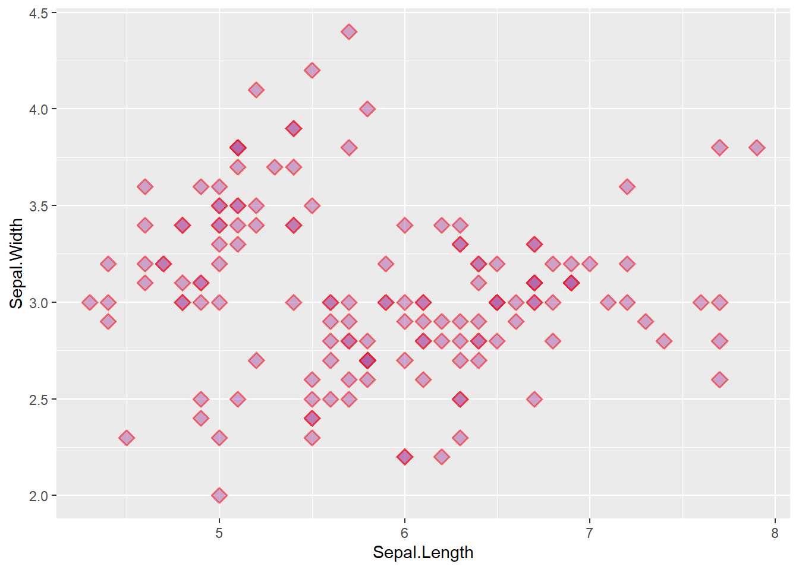
⌾ Gradient colour scatter plot
A scatter plot typically represents two-dimensional data and is most often used for continuous variables. However, by assigning attributes such as colour or size to the points, additional dimensions of data can be visualised.
In a gradient-style scatter plot, any aesthetic that varies with the data must be specified inside the aes() function. Conversely, if an aesthetic does not vary with the data, it should be placed outside the aes() function.
Building on the previous example, colour can be used to distinguish species (Species), while point size can represent petal width (Petal.Width). The point shape is kept fixed as circles, and therefore its corresponding argument should be specified outside the aes() function. The code is shown below.
ggplot(iris, aes(x=Sepal.Length, Sepal.Width))+
geom_point(aes(color=Species, size=Petal.Width), shape=20)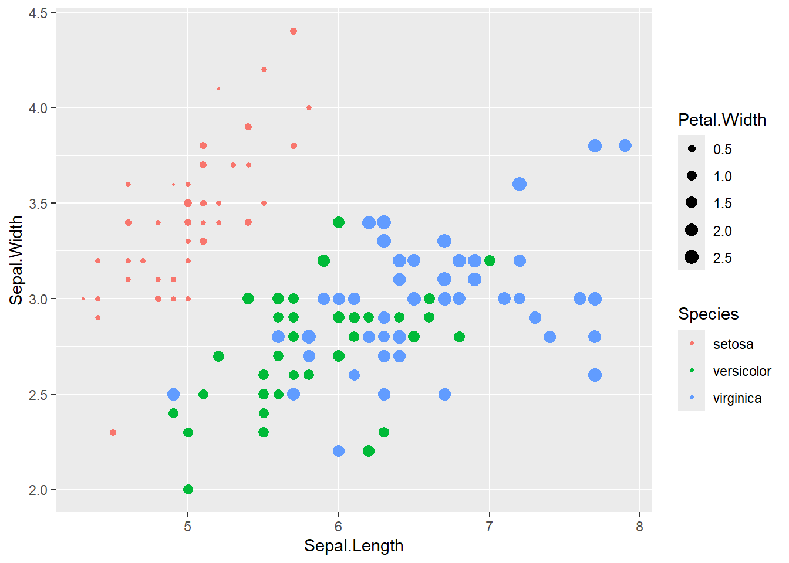
In the figure, “Species” is a categorical variable, while “Petal.Width” is a continuous variable. By incorporating gradient aesthetics in the scatter plot, additional dimensions of the data can be represented, enriching the overall information conveyed.
From the plot, it can be observed that the setosa category (red dots) has relatively smaller petal widths (indicated by point size) and shorter sepal lengths (x-axis) compared with the other two species, making it clearly distinguishable. This demonstrates how gradient-enhanced scatter plots can help identify important variables for data classification, which is a key step in data science.
To adjust the colour gradient, refer to this; to modify the size scale of the points, refer to this.
⌾ Gradient colour scatter plot: adjust the legend order
For adjusting the order of the legend, please first refer to this. By default, legend entries are arranged in alphabetical order. To customise the legend order into a specified sequence, the factor() function can be used to define the levels of the categorical variable.
For example, to set the legend order as “virginica, versicolor, setosa”, the code is written as follows.
iris_rev=iris
iris_rev$Species=factor(iris_rev$Species, c("virginica","versicolor","setosa"))
ggplot(iris_rev, aes(x=Sepal.Length, Sepal.Width))+
geom_point(aes(color=Species, size=Petal.Width), shape=20)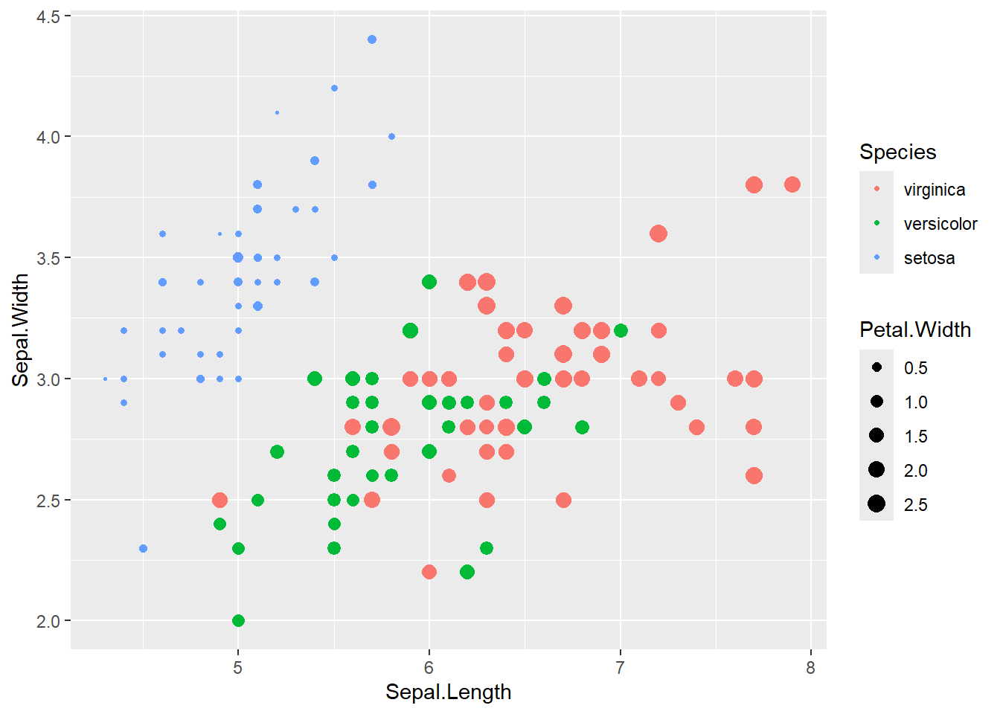
⌾ Add text and label
To add text annotations to a plot, the geom_text() function should be used (see this).
For example, to label the centroid of each species (Species), the following code first calculates the centre point of each group using group_by() %>% summarise(), and then adds the corresponding text labels to the plot.
# derive the centre point of each species
iris_sum=group_by(iris, Species)%>%
summarise_at(c("Sepal.Length", "Sepal.Width"), mean)
# add texts to the plot
ggplot()+
geom_point(data=iris, aes(x=Sepal.Length, Sepal.Width, color=Species, size=Petal.Width), shape=20, alpha=0.5)+
geom_text(data=iris_sum, aes(x=Sepal.Length, y=Sepal.Width, color=Species, label=Species), size=5)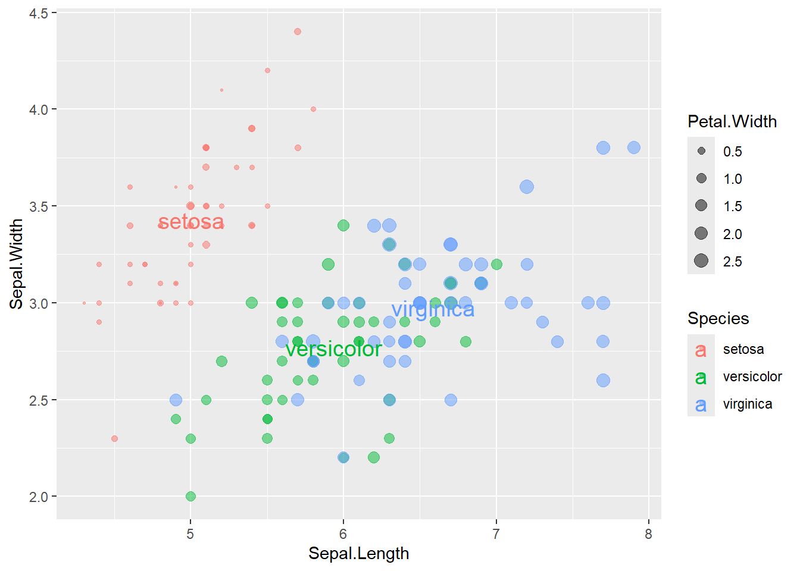
Alternatively, using geom_label() function to add the labels. The corresponding code is shown below.
# add texts
ggplot()+
geom_point(data=iris, aes(x=Sepal.Length, Sepal.Width, color=Species, size=Petal.Width), shape=20, alpha=0.5)+
geom_label(data=iris_sum, aes(x=Sepal.Length, y=Sepal.Width, color=Species, label=Species), size=4)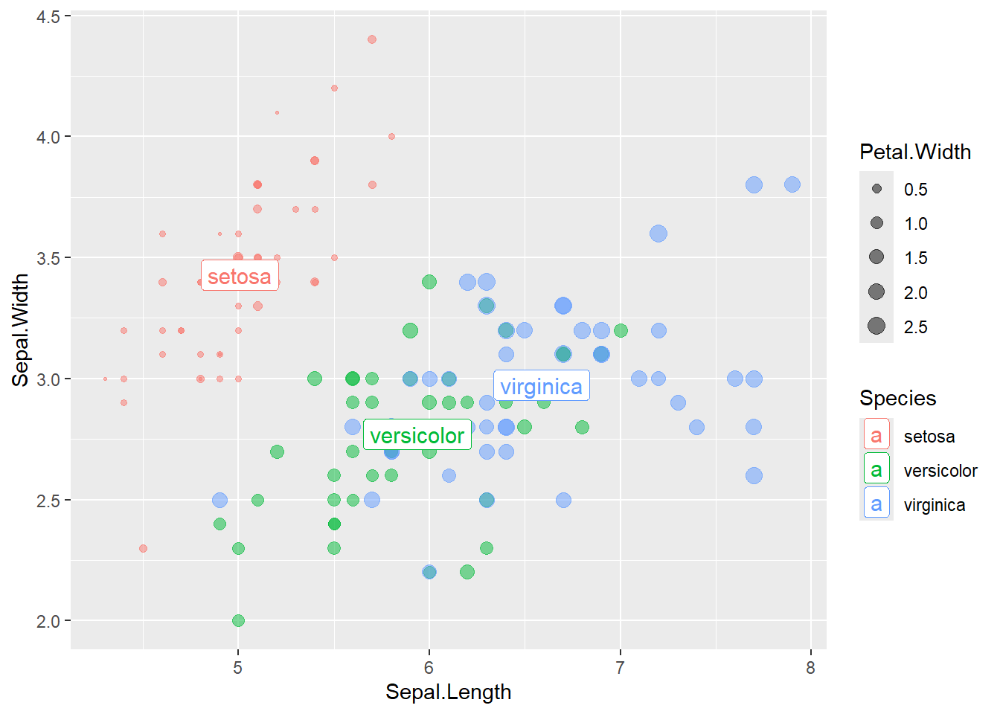
⌾ Add trend line
A scatter plot is commonly used to illustrate the relationship between two continuous variables, allowing underlying trends to be inferred. When creating such plots, it is often helpful to include a trend line to guide interpretation of the relationship between variables.
A trend line can be added using the geom_smooth() function, with the general structure of the function shown as follows.
The settings of all arguments is shown in Table 3.3。
| Arguments | Usage | Note |
|---|---|---|
method=
|
Set the regression model for the trend line |
Linear regression (lm) or generalised linear models (glm) can be used
|
formula=
|
Set the regression formula |
Default is y ~ x
|
se=
|
Set whether to display the standard error of the trend line |
Default is TRUE; set to FALSE to hide the standard error
|
level=
|
Set the confidence level |
Default is 95% (0.95) confidence level
|
span=
|
Set the smoothing span of the regression | Controls the smoothness of the curve; larger values produce smoother lines, smaller values follow the data more closely |
color=
|
Set the colour of the trend line | Refer to colour settings |
linetype=
|
Set the line type of the trend line | Refer to line type settings |
linewidth=
|
Set the thickness of the trend line | Numeric value |
fill=
|
Set the colour of the standard error band | Refer to colour settings |
alpha=
|
Set the transparency of the standard error band | Numeric value between 0 (fully transparent) and 1 (fully opaque) |
As an example of adding a linear trend line, the method = argument should be set to lm, which specifies a linear regression model. The corresponding formula is \(y = \beta x\) (y ~ x). The code is written as follows.
Note that when using linear regression, there is no need to specify the span = argument, as it is only applicable to smoothing methods for curved lines.
ggplot(iris, aes(x=Sepal.Length, Sepal.Width))+
geom_point()+
geom_smooth(method=lm, formula=y~x, color="#CE0000", fill="#FF7575", alpha=0.2)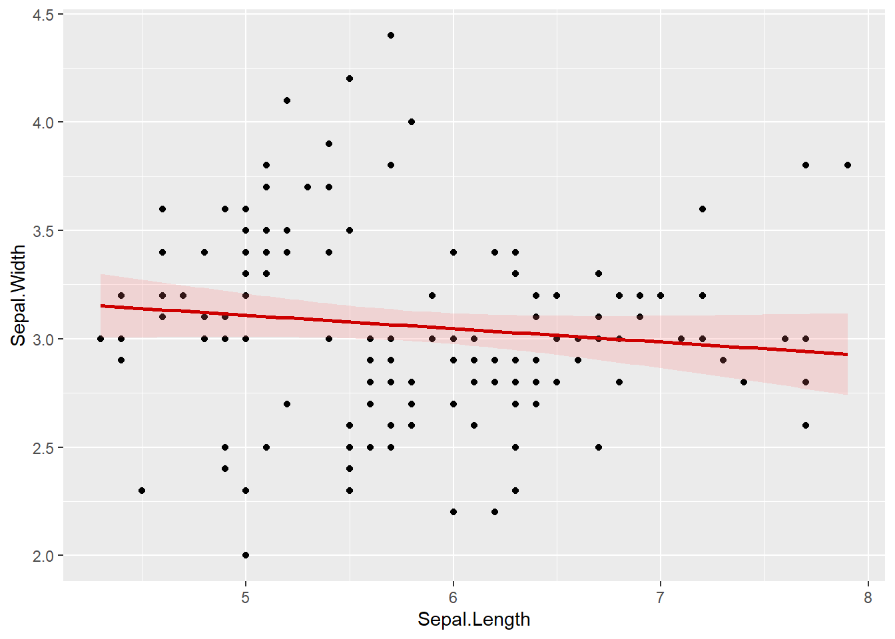
When plotting a curved trend line, different values of the span = argument will produce different smoothing results, as shown in Figure 3.6. It can be observed that larger values lead to a smoother trend line.
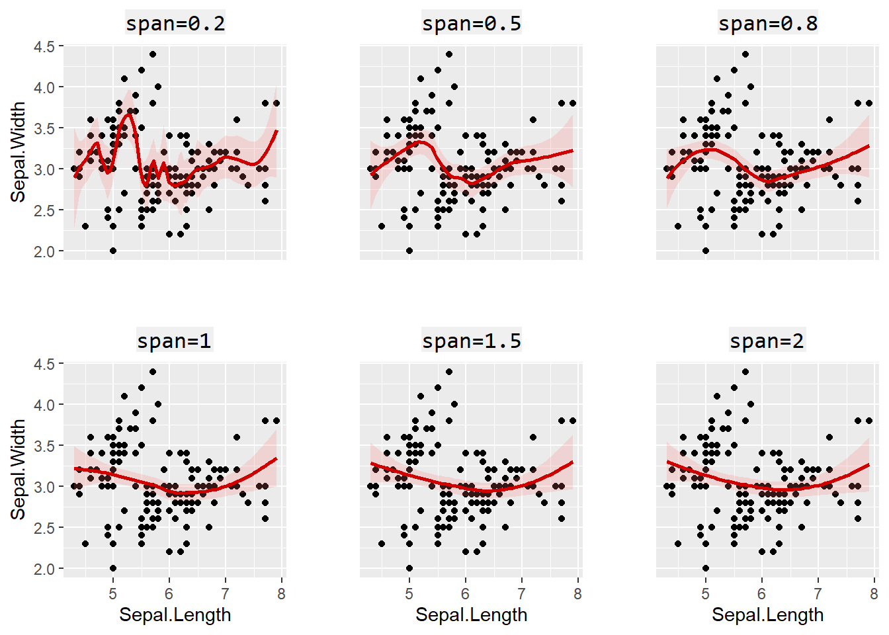
Figure 3.6: Argument span= in geom_smooth() function
⌾ Add jitter points
In some cases, data points may overlap, making them difficult to distinguish visually and harder to assess the true concentration of observations. When multiple points overlap into a single point, densely clustered data may be mistakenly perceived as sparse. This situation commonly occurs with integer or categorical data.
For example, using the mpg dataset, a scatter plot can be created with the number of cylinders (cyl) on the x-axis and highway miles per gallon (hwy) on the y-axis, as shown below.
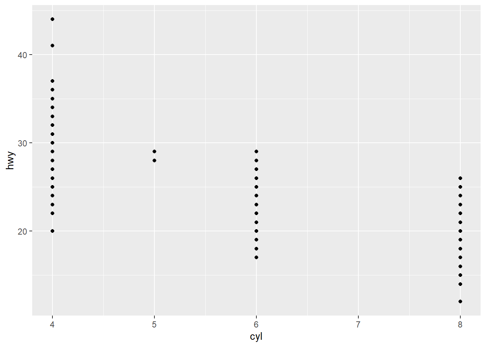
Since both the number of cylinders and highway miles per gallon in this dataset are positive integers, many data points overlap, making them difficult to observe clearly. In such cases, geom_jitter() can be used to introduce random variation, allowing points to be slightly shifted to nearby positions. This makes the distribution of the data easier to visualise without altering the overall pattern. The general structure of the geom_jitter() function is as follows.
The width = argument controls the amount of horizontal variation. For example, width = 0.1 allows points to shift randomly up to 10% to the left or right along the x-axis. The height = argument controls the amount of vertical variation.
In addition, all arguments available in geom_point() can also be applied to geom_jitter(). For instance, to adjust colour or size, we may use the arguments listed in Table 3.2.
# use duplicated() function to chek number of duplicated data
sum(duplicated(mpg[, c("cyl","hwy")]))## [1] 186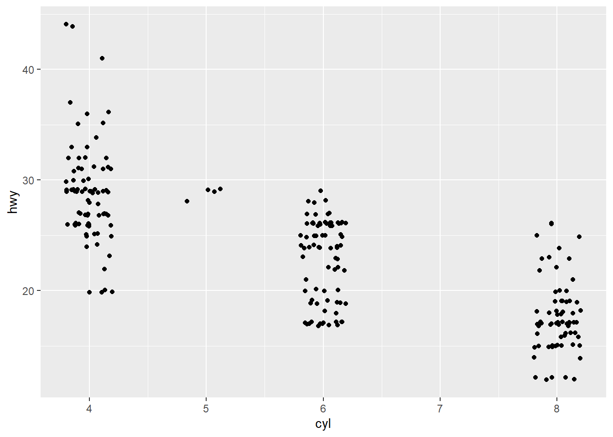
From the jitter plot shown above, it is evident that using geom_jitter() makes the data easier to distinguish. However, it is important to note that the width = and height = arguments have a significant impact on the visualisation. Larger values increase the apparent continuity of the data, but may also cause points to deviate too far from their true positions. Therefore, for different datasets, these two arguments should be adjusted through multiple trials to achieve an optimal balance between clarity and faithful representation of the original distribution.
In addition, since the jittering process is random, the output may vary each time. To ensure reproducibility, a random seed can be set using set.seed() before plotting, so that the same random variation is applied across runs.
3.1.2 Line Chart
A line chart is used to illustrate the trend between two continuous variables, or to show how a continuous variable changes over time. This can be achieved using the geom_line() function, with the general structure of the function shown below.
The settings of all arguments in geom_line() function are shown in Table 3.4。
| Arguments | Usage | Note |
|---|---|---|
color=
|
Set the colour of the line | Refer to colour settings |
linetype=
|
Set the line type | Refer to line type settings |
linewidth=
|
Set the thickness of the line | Numeric value |
alpha=
|
Set the transparency of the line | Numeric value between 0 (fully transparent) and 1 (fully opaque) |
group=
|
Set the grouping of the line | Specify the grouping variable (if set to 1, all data will be connected into a single line) |
⌾ Basic line chart
Using the airquality dataset as an example, a line chart can be created with date (Month & Day) on the x-axis and temperature (Temp) on the y-axis. The code is written as follows.
The as.Date() function is used to construct date values, and the str_pad() function ensures consistent string lengths. In addition, the geom_line() function must include the argument group = 1 to indicate that all observations should be connected into a single line.
# pre-processing the airquality data (create the date)
airquality_new=airquality
airquality_new$Date=as.Date(paste0(str_pad(airquality_new$Month, 2, "left", 0), "-", str_pad(airquality_new$Day, 2, "left", 0)), format="%m-%d")
ggplot(data=airquality_new, aes(x=Date, y=Temp))+
geom_line(group=1, color="red")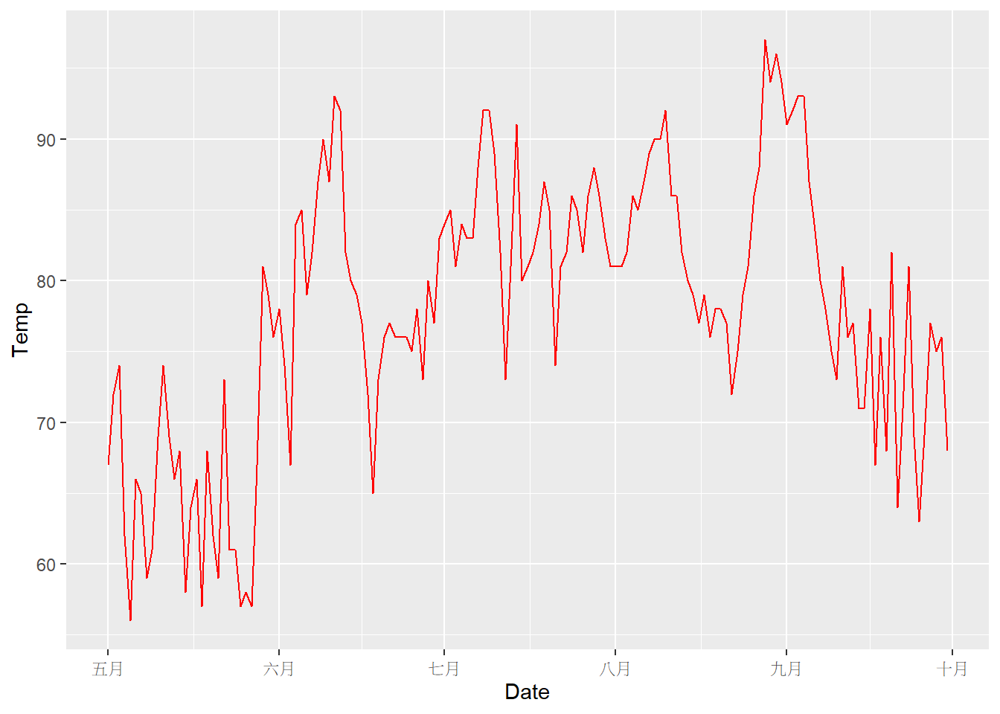
In the figure, the x-axis represents date values. To modify the display format of the time axis, please refer to axis scale.
⌾ Multi-line Chart
The previous example displays only a single line. However, in many cases, it is useful to present multiple lines within the same chart to compare data across different groups. To achieve this, the group = argument in the geom_line() function must be set to a specified grouping variable.
Using the airquality dataset again as an example, suppose we want to draw separate lines for each month and assign different colours accordingly. In this case, the group = argument should be set to Month and placed inside the aes() function, indicating that the grouping varies with the data.
Since each line is assigned a different colour, the colour = argument must also be specified within the aes() function. Finally, if the line width is fixed, the linewidth = argument should be placed outside the aes() function. Based on this logic, the code is written as follows.
ggplot(data=airquality, aes(x=Day, y=Temp))+
geom_line(aes(group=Month, color=as.factor(Month)), linewidth=1)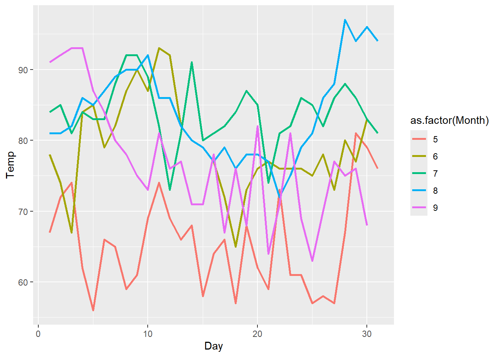
Note that in the above code, since the plot is grouped by month, Month should be converted into a character or factor variable. To adjust the colour gradient, please refer to this.
⌾ Combining line chart and scatter plot
When presenting data trends, in addition to using a line chart, it is often helpful to overlay a scatter plot to make the individual data points more explicit. Using the airquality dataset as an example, the code is written as follows.
In this code, different point shapes are assigned to different months; therefore, the shape = argument in geom_point() must be placed in the aes() function, as it varies with the data. In contrast, the point size remains constant across months, so the size = argument should be specified outside the aes() function.
ggplot(data=airquality, aes(x=Day, y=Temp))+
geom_line(aes(group=Month, color=as.factor(Month)), linewidth=1)+
geom_point(aes(group=Month, color=as.factor(Month), shape=as.factor(Month)), size=2)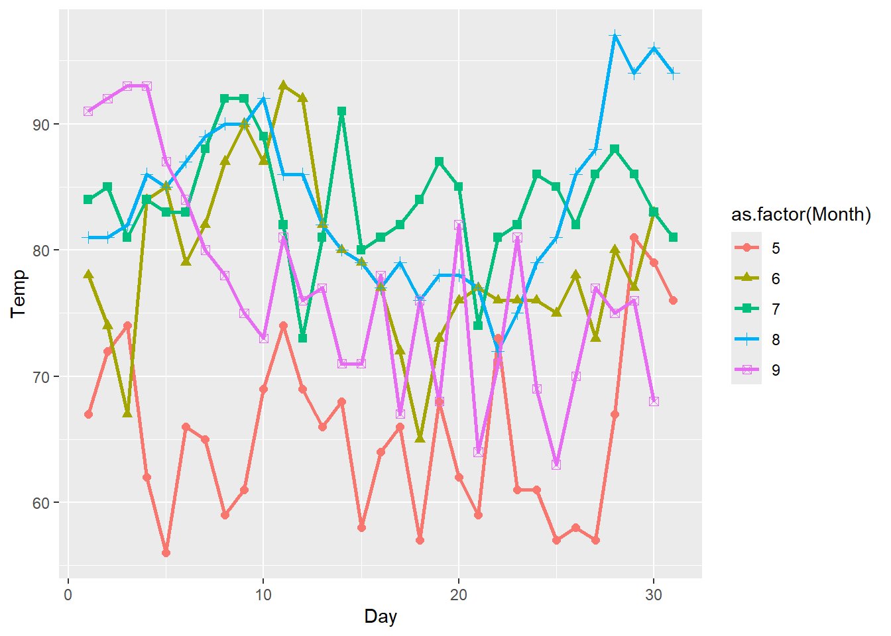